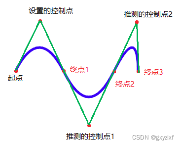
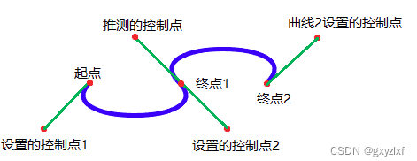
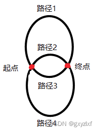

HTML5 新增标签 语义化标签 ：article、section、aside、header、nav、footer、address
progress ：表示运行中的进度<progress value='50' max='100'></progress>
input 输入框
placeholder 用来描述输入字段预期值的提示信息。输入字段为空时显示
type 的类型type=‘number’ 只能输入数字类型，火狐没效果，谷歌可以，兼容性差
音视频
video 视频
属性 ：
src：需要引入的视频资源地址
controls：是否显示视频的控件，比如播放暂停进度条音量全屏等。
autoplay：在视频就绪后马上播放。跟 muted 搭配使用，否则可能不能自动播放。
muted ：视频的音频为静音。
loop：当视频完成播放后再次开始播放
volume：视频的音量 0~1
duration ：视频的总时长
currentTime：当前播放的进度
paused：当前视频的状态是否暂停暂停 true
width：设置宽度
height：设置高度
方法 ：
play()：播放
load()：重新加载当前视频
pause()：暂停方法
1 2 3 4 5 6 7 8 9 10 11 12 13 14 15 16 17 18 19 20 21 22 23 24 25 26 27 28 29 30 31 32 33 34 35 36 37 38 39 40 41 42 43 44 45 46 47 48 49 50 51 52 53 54 55 56 57 58 59 60 61 62 63 64 65 66 67 68 69 <video src ="视频地址" controls > </video > <div class ="btns" > <button > 播放</button > <button > 暂停</button > <button > 快进</button > <button > 快退</button > <button > 快倍速</button > <button > 慢倍速</button > </div > <div class ="play" > <button id ="play" > 播放</button > <button id ="progress" > 获得播放百分比</button > </div > <div class ="showprogress" > </div > <script > var video = document .getElementsByTagName ('video' )[0 ] var btns = document .getElementsByClassName ('btns' )[0 ] btns.onclick = function ( var text = event.target .innerText if (text == '播放' ){ video.play () } if (text == '暂停' ){ video.pause () } if (text == '快进' ){ video.currentTime +=10 video.play () } if (text == '快退' ){ video.currentTime -=10 video.play () } if (text == '快倍速' ){ video.playbackRate *= 1.2 video.play () } if (text == '满倍速' ){ video.playbackRate *= 0.1 video.play () } } var play_btn = document .getElementById ('play' ) play_btn.onclick = function ( if (video.paused ){ video.play () play_btn.innerText = '暂停' }else { video.pause () play_btn.innerText = '播放' } } var progress = document .getElementById ('progress' ) progress.onclick = function ( var total = video.duration var current = video.currentTime var res = (current/total*100 ).toFixed (2 ) +'%' console .log (res); var showprogress = document .getElementsByClassName ('showprogress' )[0 ] showprogress.innerText = res } </script >
audio 音频
动画
**requestAnimationFrame()**，通知浏览器 JavaScript 动画要执行了。
**cancelAnimationFrame()**，取消重绘任务。
1 2 3 4 5 6 7 8 9 10 11 12 13 14 let enabled = true ;function expensiveOperation (console .log ('Invoked at' , Date .now ());window .addEventListener ('scroll' , () => {if (enabled) {false ;const requestID = window .requestAnimationFrame (expensiveOperation);window .setTimeout (() => enabled = true , 50 );
canvas canvas 元素专门用来绘制图形。在页面中放置一个 canvas 元素，就相当于在页面上放置一块画布，可以利用 canvas api 在其中进行图形的描绘。canvas 只是一个容器，不具备绘制能力，需要编写 js 代码实现。
导出图像 1 2 3 4 5 6 7 8 9 10 11 let drawing = document .getElementById ("drawing" );if (drawing.getContext ) {let imgURI = drawing.toDataURL ("image/png" );let image = document .createElement ("img" );src = imgURI;document .body .appendChild (image);
矩形
取得 canvas 对象
取得 2d 上下文（context）
设定绘图样式，使用图形上下文对象中的 fillStyle 填充样式 、strokeStyle 边框样式
指定线宽，使用图形上下文对象中的（lineWidth）
绘制矩形，使用图形上下文对象的
1 2 3 4 5 6 7 8 9 10 11 12 13 14 15 16 17 18 19 20 21 22 23 24 25 26 <canvas height ="500" width ="500" style ="border: 1px solid ##333;" > </canvas > <script > var canvas = document .getElementsByTagName ('canvas' )[0 ]; if (canvas.getContext ) { var context = canvas.getContext ('2d' ); context.fillStyle = 'red' ; context.strokeStyle = 'blue' ; context.lineWidth = '1' ; context.fillRect (20 , 20 , 100 , 100 ); context.strokeRect (200 , 200 , 200 , 200 ); context.clearRect (20 , 20 , 30 , 30 ); } </script >
圆形
取得 canvas 对象
取得 2d 上下文（context）
设定绘图样式，使用图形上下文对象中的 fillStyle 填充样式、strokeStyle 边框样式
指定线宽，使用图形上下文对象中的（lineWidth）
开始创建路径 context.beginPath()
设置路径 context.arc(x, y, radius, startAngle, endAanle, direction)
关闭路径 context.closePath()
设定绘制样式，进行图形绘制 fill()、stroke() 重复绘制圆形
1 2 3 4 5 6 7 8 9 10 11 12 13 14 15 16 17 18 19 20 21 <canvas height ="500" width ="500" style ="border: 1px solid ##333;" > </canvas > <script > var canvas = document .getElementsByTagName ('canvas' )[0 ] var context = canvas.getContext ('2d' ); context.fillStyle = 'red' context.strokeStyle = 'blue' context.lineWidth = '1' context.beginPath () context.arc (200 ,200 ,50 , Math .PI /180 * 0 ,Math .PI /180 *360 ,) context.closePath () context.fill () context.stroke () </script >
渐变色
取得 canvas 对象
创建渐变对象，并添加渐变色
1 2 3 4 5 var gradient = context.createLinearGradient (xstart,ystart,xend,yend)addColorStop (number,'color' )addColorStop (number,'color' )
获取 2d 上下文 context
设置填充模式 context.fillStyle = gradient
绘制矩形 context.fillRect(x,y,width,height)
1 2 3 4 5 6 7 8 9 10 11 12 13 14 15 <canvas height ="500" width ="500" style ="border: 1px solid ##333;" > </canvas > <script > var canvas = document .getElementsByTagName ('canvas' )[0 ] var context = canvas.getContext ('2d' ); var gradient = context.createLinearGradient (100 ,100 ,300 ,300 ) gradient.addColorStop (0 ,'##fff' ) gradient.addColorStop (1 ,'##000' ) context.fillStyle = gradient context.fillRect (100 ,100 ,200 ,200 ) </script >
图片
取得 canvas 对象
获取 2d 上下文 context
创建图像对象
1 2 var image = new Image ()src = './photo.jpg'
在图片加载完毕后绘制图片，绘制图像
1 2 3 4 image.onload = function (drawImage (image，x，y) drawImage (image，x，y，w，h)
可以设置平铺模式
1 var pattern = context.createPattern (image,'repeat' )
将平铺对象复制给填充模式
1 context.fillStyle = pattern
1 2 3 4 5 6 7 8 9 10 11 12 13 14 15 16 17 18 19 20 <canvas height ="1000" width ="1000" style ="border: 1px solid ##333;" > </canvas > <script > var canvas = document .getElementsByTagName ('canvas' )[0 ] var context = canvas.getContext ('2d' ); var image = new Image () image.src = '../image/哈士基.jpeg' image.onload = function ( var pattern = context.createPattern (image,'repeat' ) context.fillStyle = pattern context.fillRect (20 ,20 ,500 ,500 ) } </script >
文字
取得 canvas 对象
取得 2d 上下文（context）
设定绘图样式（fillStyle 填充样式、strokeStyle 边框样式）
指定线宽（lineWidth）
设置文字和对齐方式
绘制文字
1 2 3 4 5 6 7 8 9 10 11 12 13 14 15 16 17 18 <canvas height ="500" width ="500" style ="border: 1px solid ##333;" > </canvas > <script > var canvas = document .getElementsByTagName ('canvas' )[0 ] var context = canvas.getContext ('2d' ); context.fillStyle = 'red' context.strokeStyle = 'blue' context.lineWidth = '1' context.font = '40px sans-serif' context.textAlign = 'center' context.fillText ('hello canvas' , 200 ,100 ) context.strokeText ('hello canvas' , 200 ,200 ) </script >
线段 moveTo(x, y)：线段的起点坐标 (x, y)
1 2 3 4 5 6 7 8 9 10 11 12 13 14 15 16 17 18 19 <canvas height ="500" width ="500" style ="border: 1px solid " > </canvas > <script > window .onload = function ( var canvas = document .querySelector ('canvas' ); var context = canvas.getContext ('2d' ); context.beginPath (); context.lineWidth = '3' ; context.strokeStyle = 'red' ; context.moveTo (0 , 0 ); context.lineTo (100 , 100 ); context.lineTo (200 , 10 ); context.lineTo (300 , 100 ); context.closePath (); context.stroke (); } </script >
变形 1. 平移 translate(x,y)：重新映射画布上的原点位置2. 扩大（放大坐标） scale(x,y)：x: 代表的是水平方向上的放大倍数、y: 代表的是垂直方向上的放大倍数（如果想要缩小，参数设置为 0~1 之间3. 旋转 rotate(angle)：angle: 旋转角度，旋转的中心点就是坐标轴的原点，默认按照顺时针进行旋转，想要进行逆时针旋转，角度设置为负数4. 保存和回滚 save(): 将当前的绘画状态进行保存并存入状态栈restore(): 该方法每次调用只会回滚到上一次 save 的状态
1 2 3 4 5 6 7 8 9 10 11 12 13 14 15 16 17 18 19 20 21 22 23 24 25 26 27 28 29 30 31 32 33 <canvas id ="myCanvas" height ="500" width ="500" style ="border: 1px solid " > </canvas > <script > window .onload = function ( var canvas = document .querySelector ('canvas' ); var context = canvas.getContext ('2d' ); context.save (); context.beginPath (); context.lineWidth = '3' ; context.strokeStyle = 'red' ; context.moveTo (0 , 0 ); context.lineTo (100 , 100 ); context.stroke (); context.translate (100 ,100 ) context.beginPath (); context.lineWidth = '3' ; context.strokeStyle = 'red' ; context.moveTo (0 , 0 ); context.lineTo (200 , 100 ); context.stroke (); context.restore (); context.beginPath (); context.lineWidth = '3' ; context.strokeStyle = 'blue' ; context.moveTo (0 , 0 ); context.lineTo (100 , 100 ); context.stroke (); } </script >
时钟 1 2 3 4 5 6 7 8 9 10 11 12 13 14 15 16 17 18 19 20 21 22 23 24 25 26 27 28 29 30 31 32 33 34 35 36 37 38 39 40 41 42 43 44 45 46 47 48 49 50 51 52 53 54 55 56 57 58 59 60 61 62 63 64 65 66 67 68 69 70 71 72 73 74 75 76 77 78 79 80 81 82 83 84 85 86 87 88 89 90 91 92 93 94 95 96 97 98 99 <canvas height ="800" width ="800" style ="border: 1px solid" > </canvas > <script > window .onload = function ( var canvas = document .querySelector ('canvas' ); var context = canvas.getContext ('2d' ); function clock ( context.beginPath (); context.arc (400 ,400 ,200 ,0 ,Math .PI *2 ); context.fillStyle = 'pink' ; context.fill (); context.closePath (); for (i=0 ; i<12 ; i++){ context.save (); context.translate (400 ,400 ); context.rotate (i*(Math .PI /6 )); context.beginPath (); context.moveTo (0 ,-180 ); context.lineTo (0 ,-200 ); context.closePath (); context.lineWidth = 4 ; context.fillStyle = 'black' ; context.rotate (Math .PI /6 ); context.font = '16px bold' ; context.fillText (i+1 , -5 , -220 ); context.stroke (); context.restore (); } for (i=0 ; i<60 ; i++){ context.save (); context.translate (400 ,400 ); context.beginPath (); context.rotate (i*(Math .PI /30 )); context.moveTo (0 , -190 ); context.lineTo (0 , -200 ); context.stroke (); context.closePath (); context.restore (); } var today = new Date (); var hour = today.getHours (); var min = today.getMinutes (); var sec = today.getSeconds (); hour = hour+min/60 ; context.lineWidth =4 context.save (); context.translate (400 ,400 ); context.rotate (hour*Math .PI /3 ); context.beginPath (); context.moveTo (0 ,10 ) context.lineTo (0 ,-100 ); context.stroke () context.closePath (); context.restore (); context.lineWidth =3 context.save (); context.translate (400 ,400 ); context.rotate (min*(Math .PI /30 )); context.beginPath (); context.moveTo (0 ,10 ); context.lineTo (0 ,-160 ); context.stroke () context.closePath (); context.restore (); context.lineWidth =2 context.save (); context.translate (400 ,400 ); context.rotate (sec*Math .PI /30 ); context.beginPath (); context.moveTo (0 ,10 ); context.lineTo (0 ,-180 ); context.strokeStyle ='red' context.stroke () context.closePath (); context.restore (); context.lineWidth =1 context.save (); context.translate (400 ,400 ); context.beginPath (); context.arc (0 ,0 ,5 ,0 ,Math .PI *2 ); context.fill (); context.fillStyle ='##ccc' context.strokeStyle ='red' context.stroke () context.closePath (); context.restore (); } setInterval (clock, 1000 ) clock (); } </script >
合成
globalAlpha ，设置上下文中新绘制内容的透明度。globalCompositionOperation ，表示新绘制的形状如何与上下文中已有的形状融合。
WebGL 画布的 3D 上下文。
SVG 可伸缩矢量图形 (Scalable Vector Graphics)。
定义用于网络的基于矢量的图形
使用 XML 格式定义图形
放大或缩小不影响图片质量
相比其他图像，优势：
SVG 可被非常多的工具读取和修改（比如记事本）
SVG 与 JPEG 和 GIF 图像比起来，尺寸更小，且可压缩性更强
SVG 是可伸缩的
SVG 图像可在任何的分辨率下被高质量地打印
SVG 可在图像质量不下降的情况下被放大
SVG 图像中的文本是可选的，同时也是可搜索的（很适合制作地图）
SVG 可以与 Java 技术一起运行
SVG 是开放的标准
SVG 文件是纯粹的 XML
嵌入 HTML <embed>
1 2 3 <embed src ="rect.svg" width ="300" height ="100" type ="image/svg+xml" pluginspage ="http://www.adobe.com/svg/viewer/install/" />
pluginspage 属性指向下载插件的 URL。<object>
1 2 3 <object data ="rect.svg" width ="300" height ="100" type ="image/svg+xml" codebase ="http://www.adobe.com/svg/viewer/install/" />
<iframe>
1 <iframe src ="rect.svg" width ="300" height ="100" > </iframe >
预定义形状元素 矩形 <rect> 1 2 3 <rect width ="300" height ="100" style ="fill:rgb(0,0,255);stroke-width:1; stroke:rgb(0,0,0)" />
圆形 <circle> 1 2 <circle cx ="100" cy ="50" r ="40" stroke ="black" stroke-width ="2" fill ="red" />
椭圆 <ellipse> 1 2 3 <ellipse cx ="300" cy ="150" rx ="200" ry ="80" style ="fill:rgb(200,100,50); stroke:rgb(0,0,100);stroke-width:2" />
线 <line> 1 2 <line x1 ="0" y1 ="0" x2 ="300" y2 ="300" style ="stroke:rgb(99,99,99);stroke-width:2" />
折线 <polyline> 仅包含直线的形状。
1 2 <polyline points ="0,0 0,20 20,20 20,40 40,40 40,60" style ="fill:white;stroke:red;stroke-width:2" />
多边形 <polygon> 不少于三条边的图形。
1 2 3 <polygon points ="220,100 300,210 170,250" style ="fill:##cccccc; stroke:##000000;stroke-width:1" />
路径 <path>
M = moveto 起始
L = lineto 连线
H = horizontal lineto 水平线
V = vertical lineto 垂直线
C = curveto 三次贝塞尔曲线
S = smooth curveto 三次贝塞尔曲线
Q = quadratic Belzier curve 二次贝塞尔曲线
T = smooth quadratic Belzier curveto 二次贝塞尔曲线
A = elliptical Arc 椭圆弧
Z = closepath 闭合，画直线到起始点
大写表示绝对定位 (数值为线的结束位置)，小写表示相对定位 (数值等于线的长度)。
二次贝塞尔曲线

三次贝塞尔曲线 
椭圆弧 
滤镜 必须在 <defs> 中定义滤镜。
1 2 3 4 5 6 7 8 9 10 11 12 13 14 15 16 17 18 <?xml version="1.0" standalone="no" ?> <!DOCTYPE svg PUBLIC "-//W3C//DTD SVG 1.1//EN" "http://www.w3.org/Graphics/SVG/1.1/DTD/svg11.dtd" ><svg width ="100%" height ="100%" version ="1.1" xmlns ="http://www.w3.org/2000/svg" ><defs > <filter id ="Gaussian_Blur" > <feGaussianBlur in ="SourceGraphic" stdDeviation ="3" /> </filter > </defs > <ellipse cx ="200" cy ="150" rx ="70" ry ="40" style ="fill:##ff0000;stroke:##000000; stroke-width:2;filter:url(##Gaussian_Blur)" /></svg >
<feGaussianBlur> 标签的 stdDeviation 属性可定义模糊的程度in="SourceGraphic" 这个部分定义了由整个图像创建效果
渐变 必须在 <defs> 中定义渐变。
1 2 3 4 5 6 7 8 9 10 11 12 13 14 15 16 17 18 19 20 <?xml version="1.0" standalone="no" ?> <!DOCTYPE svg PUBLIC "-//W3C//DTD SVG 1.1//EN" "http://www.w3.org/Graphics/SVG/1.1/DTD/svg11.dtd" ><svg width ="100%" height ="100%" version ="1.1" xmlns ="http://www.w3.org/2000/svg" ><defs > <linearGradient id ="orange_red" x1 ="0%" y1 ="0%" x2 ="100%" y2 ="0%" > <stop offset ="0%" style ="stop-color:rgb(255,255,0); stop-opacity:1" /><stop offset ="100%" style ="stop-color:rgb(255,0,0); stop-opacity:1" /></linearGradient > </defs > <ellipse cx ="200" cy ="190" rx ="85" ry ="55" style ="fill:url(##orange_red)" /></svg >
<stop> 每种颜色一个标签，offset 定义位置。 <linearGradient id="orange_red" x1="0%" y1="0%" x2="100%" y2="0%"><radialGradient id="grey_blue" cx="20%" cy="40%" r="50%" fx="50%" fy="50%">
实例 SVG 实例
拖拽 在 H5 中实现了拖拽技术，允许用户在网页内部拖拽以及浏览器与其他应用程序之间的拖拽，通过拖拽可以传递数据。属性 ：draggable（是否可拖动）事件
拖拽元素（需要改变位置的元素）
目标元素（被放置元素的元素）
拖拽事件流 ：数据交互 dataTransfer event.datatransfer.setData() 在元素拖拽开始时设置 ondragstartevent.datatransfer.getData() 在元素放置时获取 ondrop前提
Web 存储 WebStorage 目标：
提供一种在 cookie 之外存储会话数据的路径
提供一种存储大量可以跨会话存在的数据的机制
HTML5 的 WebStorage 提供两种 API：localStorage（本地存储）、sessionStorage（会话机制）
cookie 存储在浏览器中，每次浏览器向服务器发送请求都需要携带 cookie，一般情况下，cookie 是产生于服务器端，保存于客户端。但是我们也可以通过 js 来产生 cookie，可以通过 js-cookie 这个库来操作 cookie特点：
数据持久型，即数据在浏览器关闭时才删除
不需要任何服务器资源，因为 cookie 是存储在客户端并发送给服务器读取
可配置到期，控制 cookie 的生命周期，使之不会永远有效，偷盗者可能拿到的是过期的 cookie
1 2 3 4 5 6 7 8 9 10 11 "https://cdn.bootcdn.net/ajax/libs/js-cookie/latest/js.cookie.min.js" ></script>var cookie = Cookies .set ('name' ,'this is a cookie' ,{expires :7 })var name = Cookies .get ('name' )Cookies .remove ('name' )
sessionStorage sessionStorage 仅在当前会话下有效（关闭选项卡或关闭浏览器后会话数据失效），仅在客户端 (即浏览器）中保存，不参与和服务器的通信。特点 ：
页面会话在浏览器打开期间一直保持，并且重新加载 或恢复页面 仍会保持原来的页面会话
重新加载：点击刷新按钮刷新页面
恢复页面：当前 tab 没有关闭，跳转到其他地址后，再重新回到原来页面。
打开多个相同的 URL 的 Tabs 页面，会创建各自的 sessionStorage
关闭对应浏览器的 tab，会清除对应的 sessionStorage
重点是原来页面的那个 tab 是否关闭，即使 tab 已经不是原来的页面地址 。
1 2 3 4 5 6 7 8 sessionStorage .setItem ('name' ,'zhangsan' )sessionStorage .getItem ('name' )sessionStorage .remove ('name' )sessionStorage .clear ()
localStorage localStorage 生命周期是永久，这意味着除非用户显示在浏览器提供的 UI 上清除 localStorage 信息，否则这些信息将永远存在。仅在客户端（即浏览器）中保存，不参与和服务器的通信。特点：
1 2 3 4 5 6 7 8 localStorage .setItem ('name' ,'zhangsan' )localStorage .getItem ('name' )localStorage .remove ('name' )localStorage .clear ()
异同
作用域的不同：
存储大小：
存储位置：
存储内容类型：
获取方式：
应用场景：
WebStorage 的优点：
通信 BoardCast Channel 适用于同一 origin 下的不同页面之前进行通信。
1 2 3 4 5 6 7 8 9 10 11 12 13 14 15 16 17 18 19 20 21 22 23 24 25 26 27 28 const channel = new BroadcastChannel ('demo' );function sendMsg (type, content ) {console .log ('sendMsg' );postMessage ({function listenMsg (callback ) {const handler = e => {console .log ('callback' );callback (e.data );addEventListener ('message' , handler);return () => {removeEventListener ('message' , handler);const message = (function (return {
Service Worker Localstorage、window.onstorage Shared Worker 定时器轮询 (setInterval) IndexDB 定时器轮询 (setInterval) Cookie 定时器轮询 (setInterval) window.open、window.postMessage H5 提供了网页文档之间互相接收与发送消息的功能，当在 a 页面中通过 window.open() 方法打开 b 页面，或者在 a 页面中通过 iframe 嵌套 b 页面，我们想让 a 中的数据传递到 b 中就可以使用跨文档消息传输a.html
1 2 3 4 5 6 7 8 9 10 11 12 13 14 15 16 17 <button onclick ="sendMessage()" > 发送消息</button > <script > let windowB = window .open ("http://127.0.0.1:5500/test/b.html" ) function sendMessage ( const data = { name : 'lili' }; windowB.postMessage (JSON .stringify (data), 'http://127.0.0.1:5500' ); }; window .addEventListener ('message' , function (e ) { console .log ('来自页面b的数据 ---> ' + e.data ); }, false ); </script >
b.html
1 2 3 4 5 6 7 8 9 10 11 12 <script > window .addEventListener ('message' , function (e ) { console .log ('来自页面a的数据 ---> ' + e.data ); var data = JSON .parse (e.data ); if (data) { data.age = 16 ; e.source .postMessage (JSON .stringify (data), e.origin ); } }, false ); </script >
Websocket 使用 websocket 可以在服务器与客户端之间建立一个非 http 的双向连接，这个连接是实时的也是永久的，除非被显示关闭。服务器可以随时将消息推送到客户端。
1 2 3 4 5 6 7 8 9 10 11 12 13 14 15 var ws = new Websocket ('ws://47.94.46.113:8888/imserver/1' )onopen = function (e ){console .log (e)send ('我是客户端' ) onmessage = function (e ){console .log (e.data )onerror = function (onclose = function (
close 的 event 额外包含三个属性：
wasClean，连接是否干净的关闭。
code，来自服务器的数值状态码。
reason，来自服务器的消息。
WebSocket_ohana！的博客-CSDN博客_websocket
SSE Event-Stream技术 - 柯南小海盗 - 博客园
地理位置 geolocation H5 中添加了获取地理位置的 api，window.navigator.geolocation.getCurrentPosition。也是百度地图/高德地图通过浏览器定位的实现原理。
1 2 3 window .navigator .geolocation .getCurrentPosition (function (position ){console .log (position)